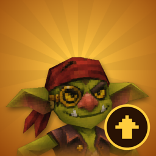

A private desktop tool used by the creator of the Gem Goblin channels to upload original short videos about hidden-gem indie games to their own TikTok and YouTube accounts.
Nibs Uploader uses the YouTube API Services (YouTube Data API v3) to upload videos to the owner's own YouTube channels. See the YouTube Terms of Service and the Google Privacy Policy.
Privacy Policy · Terms of Service
Contact: nibsgemgoblin@gmail.com